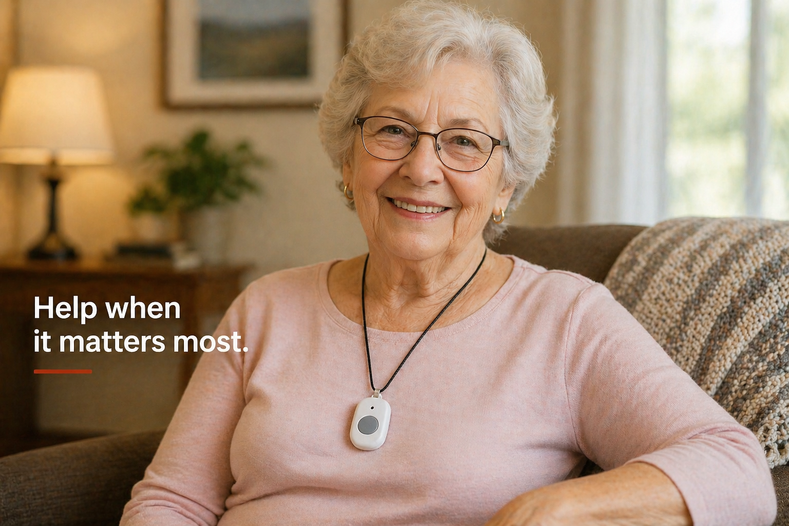

MyConnect Mobile GPS Unit
Best for someone who is active, leaves the house, drives, walks, runs errands, or needs protection both inside and outside the home.
 Email
Email
Red Desert Medical Alarms
Medical alarms give your loved one a simple way to call for help during a fall, emergency, or moment when they cannot get to the phone.

Why medical alarms matter
Red Desert Check-In helps families notice changes before things become urgent. Medical alarms are for the moments that are urgent.
If someone falls, feels weak, becomes dizzy, or cannot reach the phone, a medical alarm gives them a simple way to call for help.
Alarm options
The right medical alarm depends on how your loved one lives. Are they mostly home? Do they leave the house often? Do they still have a landline? I can help you choose the setup that actually fits.
Best for someone who is active, leaves the house, drives, walks, runs errands, or needs protection both inside and outside the home.
Best for someone who is mostly at home. This home unit does not require a landline and connects through cellular service.
Best for homes that still have a traditional landline. This is a home-based system that requires a landline connection.
How this fits with check-ins
A medical alarm is for the urgent moment when someone needs help right away. Red Desert Check-In is for the ongoing worry families feel when they need someone local to lay eyes on things, notice changes, and send an update.
Together, they create a stronger safety net: emergency access plus regular local visibility.
Pricing
All medical alarm systems are the same monthly price. I will help you choose the right device based on your loved one’s routine, mobility, and home setup.
$35/month
Choose from a mobile GPS unit, cellular home base unit, or landline home unit.
Best Value
$25/month
Lower monthly alarm rate when paired with Red Desert Check-In visits.
$30 one-time
Activation/setup fee. Waived when the alarm is paired with check-in services.
Standard alarm rate: $35/month
Bundled with check-ins: $25/month
Setup fee: $30, waived with check-in services
Why bundle them?
A medical alarm helps in an emergency. Check-ins help families notice changes before everything becomes an emergency.
When used together, families get both immediate help access and regular in-person visibility.
Not sure what they need?
Most families do not know whether they need a mobile GPS unit, a cellular home base unit, or a landline home unit. That is normal.
The better question is how your loved one actually lives day to day. That is what we use to choose the right setup.
Tell me what your loved one’s routine looks like, and we can talk through which option makes sense.